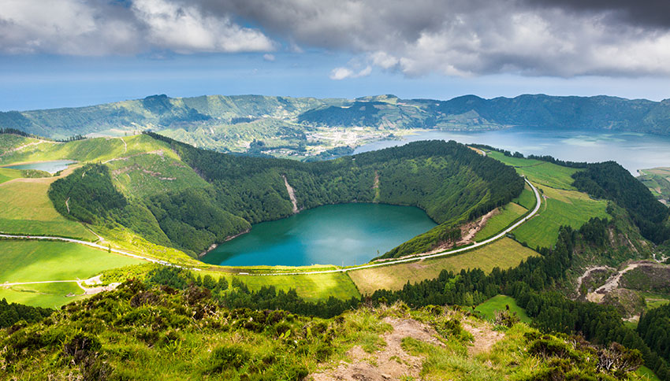
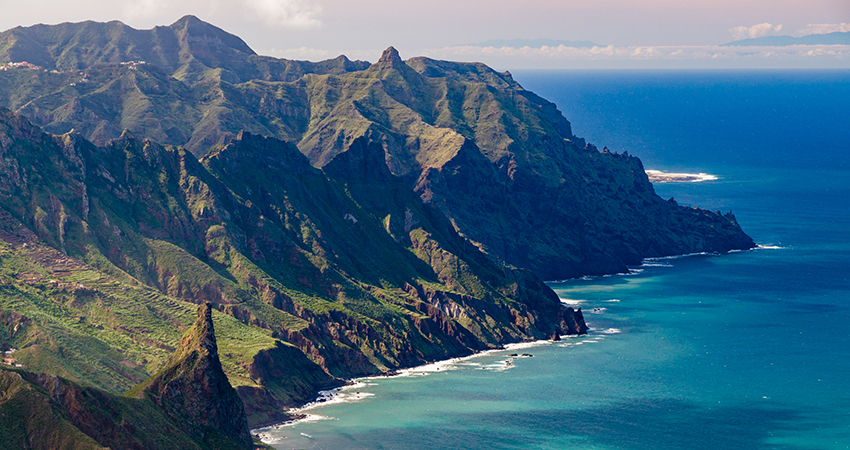

Micutul stat insular din sudul Italiei este locul ideal pentru o scurta escapada, indiferent de sezon (temperaturile sunt cu plus chiar si in lunile de iarna). Pe langa plajele care atrag anual milioane de turisti, Malta este impresionanta gratie mixului cultural existent aici (tara a fost condusa, printre altii, de fenicieni, romani, normanzi, iar toate aceste popoare si-au pus amprenta asupra sa).
Una dintre cele mai mari insule din Marea Mediterana, Corsica este locul in care s-a nascut unul dintre cele mai importante personaje din istoria Frantei: Napoleon Bonaparte. Peisaje salbatice, zone rurale care si-au pastrat autenticitatea, munte, mare, un port spectaculos, cladiri cu o arhitectura aparte: daca inca nu te-ai decis unde vrei sa pleci in vacanta, e momentul sa iei in calcul aceasta insula!

Desi nu sunt chiar atat de populare, promitem ca Azorele te vor surprinde in cel mai placut mod! La scurta distanta de Portugalia (aproximativ doua ore cu avionul), te astepta o zona verde, cu vulcani, numeroase flori (aici este patria hortensiilor), mancare buna, traditii frumoase, plaje intinse si preturi pentru toate buzunarele!
Ramanem in zona Portugaliei si ajungem in Madeira, un arhipelag micut, dar foarte, foarte frumos. Madeira are de toate: cultura, locuri exotice si, mai ales, mancare delicioasa (si bautura, vinul de Madeira este renumit in intreaga lume).

Tenerife este reprezentanta de seama a Insulelor Canare din Spania, o destinatie preferata de vedete ca Shakira, Penelope Cruz si Javier Bardem sau Mariah Carey.
Stim ca deja te gandesti la vara, la peisaje inedite, la vacante in locuri insorite, asa ca sper sa va fie utile aceste 5 propuneri carora nu le vei putea rezista: 5 insule europene pe care le vei adora!